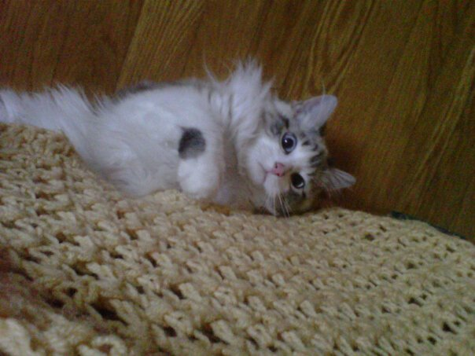

Meet Lisa Ann
by Tina (Lisa's sister)
For Someone Special is truly about someone special. I can say this because I have known Lisa all of my life. I know first hand the kindness and, generosity that dwells within her heart.
During our childhood there were times as you may suspect that I was not so keen on her being around but I am thankful that we both have come to a place in life that we are the best of friends.
Lisa is a U.S. Air Force Veteran of twenty years and continues to serve and care for our veterans through the VA Hospital in Biloxi, MS. She is a very dedicated and talented woman continually finding ways to lift the spirits of those around her through her crafty creations such as sewing, custom jewelry, crochet, quilting, and not limited to paper art.

She owns and has trained four Advanced Level certified therapy dogs: (Right to Left) Derby Dumpling, Pixie Lou, Roxie Rae, and Lucy Bell.
Simba (the cat) is simply out numbered and spends most of his time in the bedroom watching birds outside the window where he is perfectly content.
Lisa, currently is a member of the Gulf Coast Therapy Dog Association and enjoys visiting with the veterans, and nursing home residents, also a variety of children's reading programs at the local libraries on a monthly basis, as well as visiting with post disaster victims (as needed).
Lisa also attends Bel Aire Baptist Church where she participates in many outreach ministries including the Navajo Missions, and LINK-UP Missions Brazil. In 2012 she went on a life changing mission trip with LINK-UP Brazil and continues to see how God can change a life in incredible ways, when to the one serving it may only look like playing whiffle-ball.